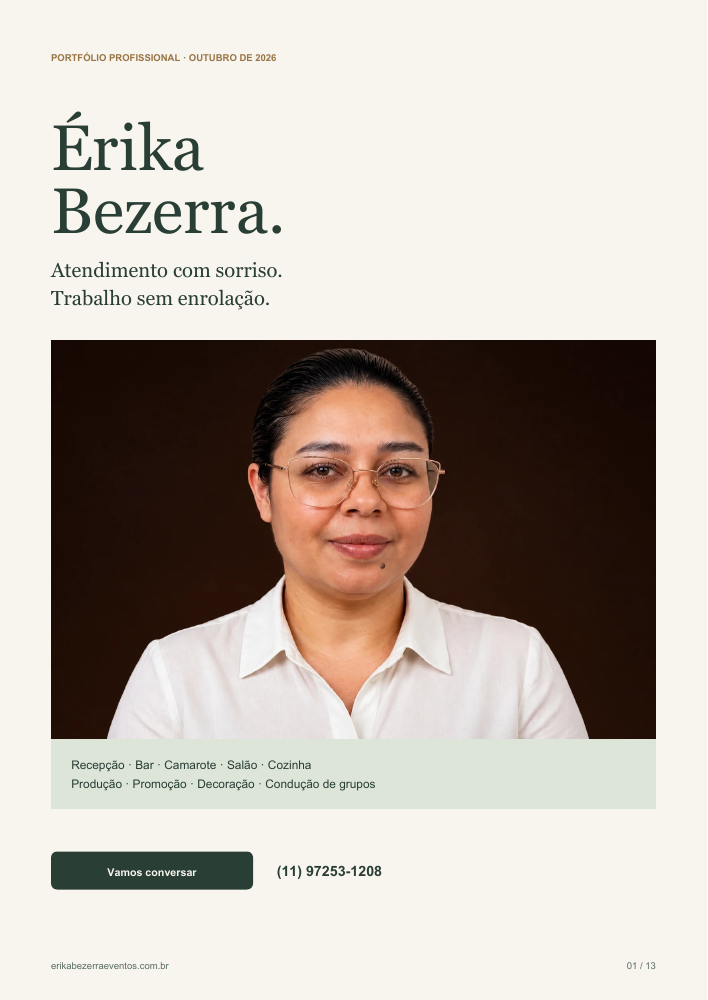
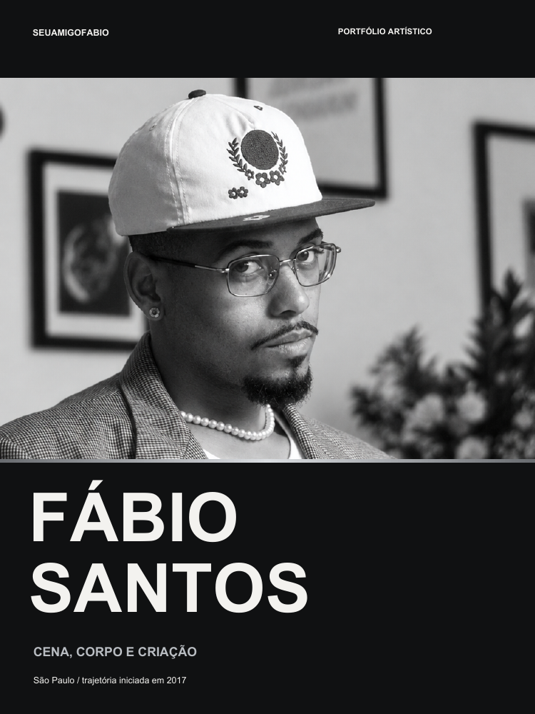

SERVIÇOS PARA EVENTOS
Érika Bezerra Eventos
Apresentar experiência e serviços, com portfólio e contato para eventos.
Abrir siteProjetos reais. Diferentes negócios, uma mesma atenção à forma de se apresentar.
6 projetos

Apresentar experiência e serviços, com portfólio e contato para eventos.
Abrir site
Uma apresentação moderna da trajetória profissional, em formato de currículo digital.
Abrir site
Atuação, dança e criação reunidas para apresentar trabalhos e receber propostas.
Abrir siteDioramas, histórias e detalhes de obras artesanais, com contato para encomendas.
Abrir site
Preparações, fotos e vídeos para apresentar o trabalho e conversar sobre eventos.
Abrir site
Referências de tranças e preparação de pedidos. Agenda demonstrativa, com confirmação pela profissional.
Abrir sitePORTFÓLIO ARTÍSTICO
Uma apresentação editorial que reúne atuação, dança, desenho e criação sonora.
Abrir portfólio completo ↗PORTFÓLIO PROFISSIONAL / EVENTOS
Serviços, trajetória e experiências em eventos em uma apresentação profissional.
Abrir portfólio completo ↗SITE + APRESENTAÇÃO PROFISSIONAL
Uma apresentação para mostrar a gastronomia, os serviços e o cuidado de Andressa em cada ocasião.
Gastronomia para eventos
Conteúdo organizado por serviços, galeria gastronômica, apresentação da profissional e jornada de contato.


SITE + PORTFÓLIO + IMAGENS COM IA
Um portfólio visual para apresentar Evellyn, suas referências de tranças e as possibilidades de atendimento.
Tranças, estilo e identidade
Composição editorial com cores marcantes, fotografias dos penteados e retratos criados com IA a partir de fotos de Evellyn.


PORTFÓLIO PROFISSIONAL + SITE
Uma apresentação da experiência profissional de Gustavo em processos, materiais e atendimento.
Administração, logística e operações
Conteúdo distribuído em perfil, trajetória, competências, formação e contato, com uma linguagem visual sóbria.


SITE + IMAGEM DE APRESENTAÇÃO
Apresentação digital do Galpão da Evy, com foco na seleção de iPhones.
Seleção de iPhones
Imagem da representante como elemento de identificação do negócio. O site pode ser acessado no link abaixo.
A forma como um profissional ou negócio se apresenta influencia a percepção de valor, confiança e profissionalismo.
Meu trabalho é organizar diferentes elementos da presença digital para criar uma apresentação mais clara, consistente e comercial.
Solicitar orçamentoSim. Os serviços podem ser contratados individualmente ou combinados em um projeto maior.
O foco são profissionais autônomos, prestadores de serviço e pequenos negócios.
Não necessariamente. Dependendo do projeto, podem ser desenvolvidas imagens profissionais com inteligência artificial.
Sim. Os sites são preparados para desktop, tablet e celular.
O prazo depende da complexidade e do escopo. Ele é definido na proposta.
Domínio e hospedagem são definidos separadamente conforme a necessidade do projeto.
Conte o que você precisa. A mensagem vai pronta para o meu WhatsApp, com o seu objetivo e o seu perfil.